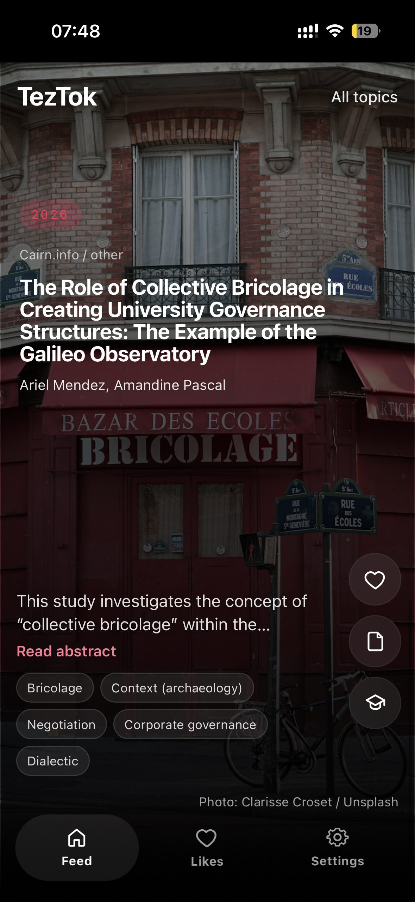
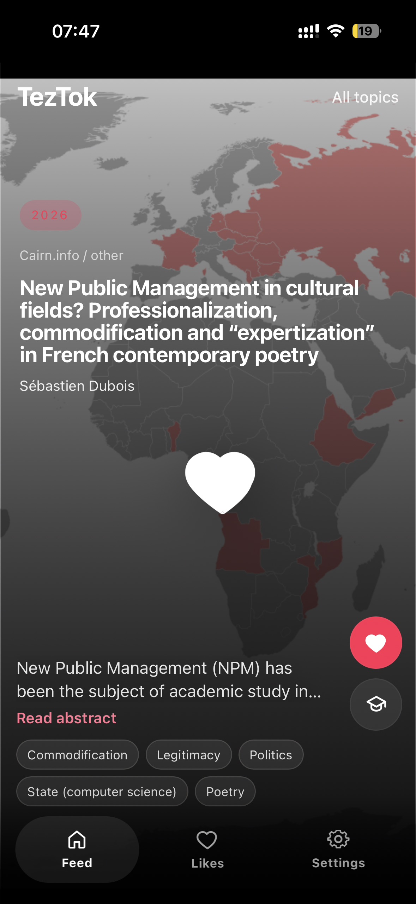
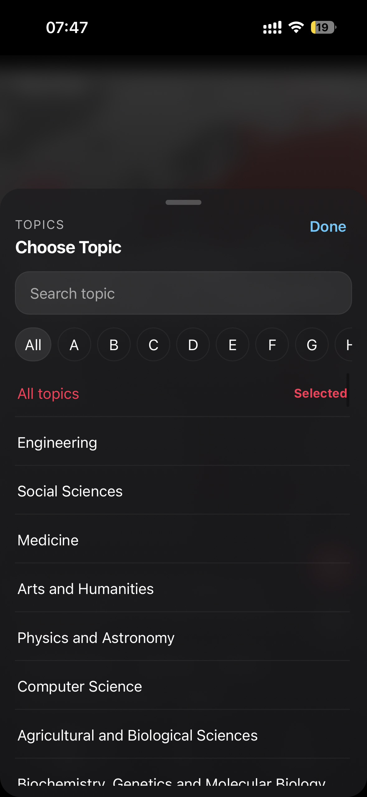
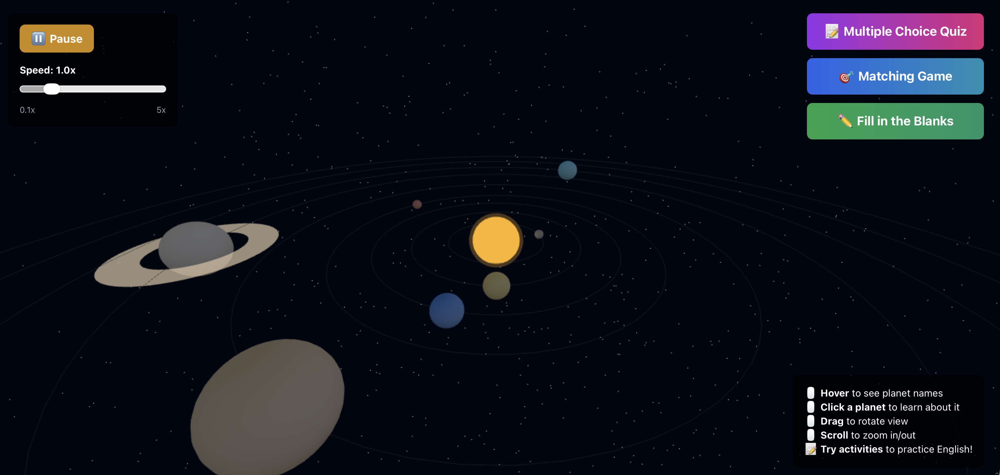
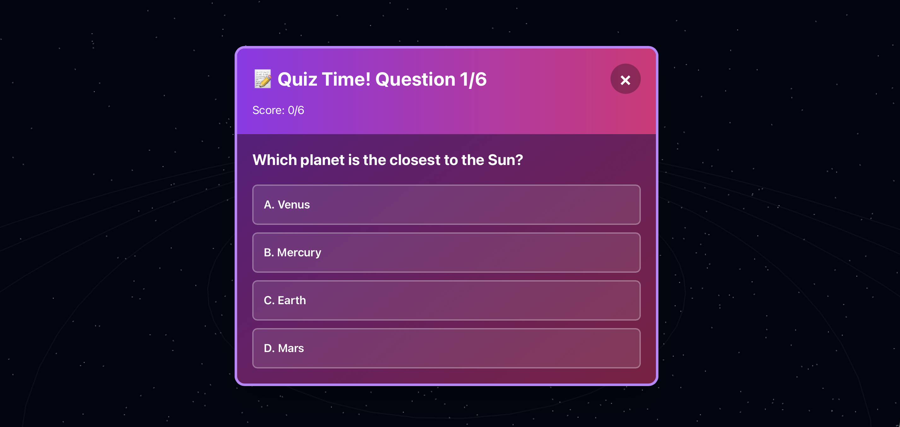

Ali Özcan
Blending the line between language and technology.
I am an undergraduate student in the Department of English Language Teaching, specializing in Educational Technology. I design interactive learning tools using JavaScript, React, and Python, focusing on making language education more accessible and engaging. I also work with AI-assisted development tools to prototype and scale these systems. I aim to further explore the intersection of language learning, human-computer interaction, and digital pedagogy at the graduate level.
Education
Bachelor’s Degree in Teaching English as a Foreign Language. Advanced specialization in English Literature and contemporary Language Teaching methodologies.
ANS w Koninie
Erasmus+ International Mobility program focusing on English Philology. Active participant in cross-cultural academic activities and community engagement.
Research
Yapay Zeka Destekli Akademik Araştırma Araçlarının İngiliz Edebiyatı Öğrencilerinin Literatür Taraması ve Akademik Yazma Süreçlerine Katkısı
An action research project investigating the integration of AI tools (Elicit, Scite, NotebookLM) into academic writing workflows for undergraduate English Literature students.
Panopticism and Biopower in The Substance: A Foucauldian Analysis
An analysis of Coralie Fargeat’s 2024 film through Foucault’s theories of surveillance and biopower, examining the cycle of self-assessment and normalization in modern society.
Projects
A mobile-first interface that rethinks how users discover academic research, shifting from search-based access to feed-based exploration. It explores more intuitive ways of engaging with academic content, lowering the barrier to research discovery. Built with React and integrated with open-access academic APIs (e.g., OpenAlex, Crossref, YÖK Tez Merkezi).




A browsable interactive educational tool developed to teach English vocabulary and astronomy through immersive exploration.


Blog
Exploring the Boundaries of Computational Philology
A reflection on how modern large language models can be used to re-examine classical literary texts through a quantitative lens, balancing close reading with distant reading.
Designing for Focus: The Minimalist Academic
Why stripping away UI clutter is essential for educational tools like TezTok, especially in a mobile-first world where attention is the scarcest resource.
Leadership & Community
Directing community engagement and visual design for the Science Fiction and Fantasy Society. Organized events with 100+ participants and fostered a creative, inclusive ecosystem for the student population.
Co-managed a cultural integration project at PADAM. Facilitated Turkish language learning and cultural exchange for international students through interactive workshops and immersive community events.